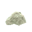
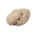
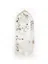
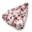
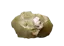

Correspondence Grimoire
Akashic Records

Chalk
Golden Coracalcite
Hollandite Quartz
KakortokiteKämmereriteLabradorite
Lemurian Gold OpalThe Akashic Records are understood across metaphysical traditions as a comprehensive account of all activity that has occurred on Earth since its origin, including events yet to come. Every living being is said to be represented within them.
Rather than a physical archive or written text, the Akashic Records exist as an etheric repository of wisdom, a kind of cosmic library accessible through meditation, shamanic journey, or trance states. The information held there pertains to both individual and planetary experience.
The word "Akashic" derives from the Sanskrit akasha, meaning "sky" or "ether," pointing to the invisible, all-pervasive medium through which this knowledge is said to exist.